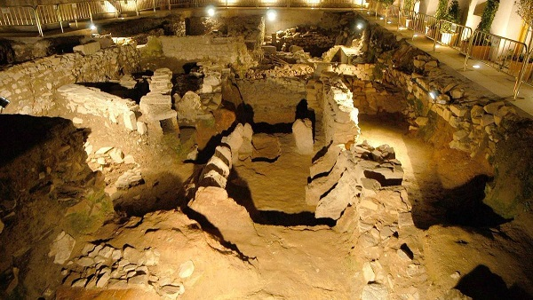

|
CÁCERES |
| Los orígenes de Cáceres como núcleo urbano se remontan al año 39 y el 19 a.e.c. con la fundación de la colonia romana Norba Caesarina, por Lucio Cornelio Balbo. De época romana se conserva una puerta en el flanco oriental de la muralla denominada Arco del Cristo o Puerta del Río, construida en el siglo I con grandes sillares. Se conserva también restos de uno de los torreones que la flanqueaban, la llamada Torre del Río. Destacamos los restos romanos del Palacio de Mayoralgo. El yacimiento muestra la evolución histórica de la ciudad, desde su origen romano hasta la actualidad. Foto: elperiodicoextremadura.com
 También destacamos el campamento romano republicano de Castra Cecilia, Cáceres el Viejo, y su Centro de Interpretación.
|